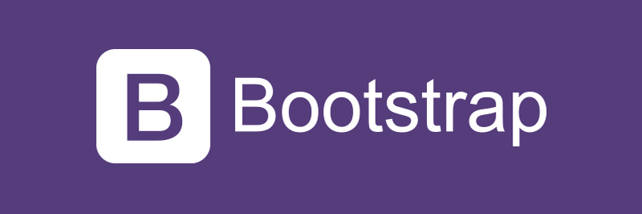
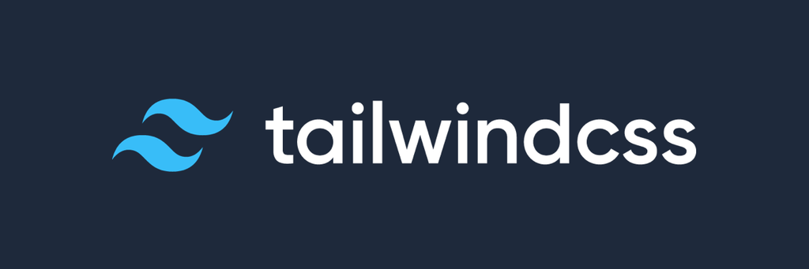
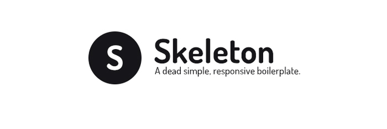
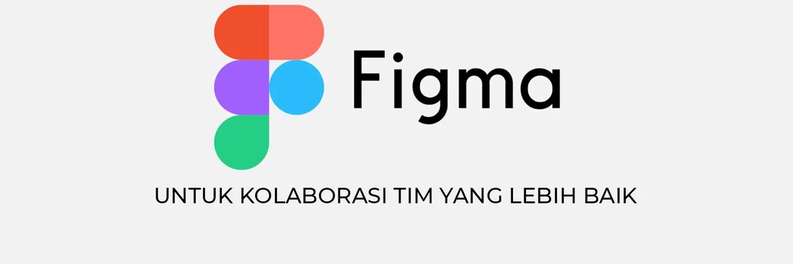

|
El desarrollo de aplicaciones web responsivas se ha facilitado considerablemente gracias a la disponibilidad de diversos frameworks y herramientas que agilizan y optimizan el proceso de diseño y desarrollo. Algunos ejemplos serian: Bootstrap, Foundation, Materialize CSS, Tailwind CSS, Skeleton, HTML5 Boilerplate, Figma, Webflow. |
BootstrapUn framework de CSS popular que facilita el diseño responsive y la creación de interfaces modernas con componentes predefinidos como grids, botones y modales. |
 |
FoundationUn framework front-end avanzado y flexible, ideal para diseñar sitios web y aplicaciones responsiv con un enfoque en personalización y escalabilidad. |
|
Tailwind CSSUn framework de utilidades que permite crear diseños personalizados directamente en el HTML, ofreciendo un control total sobre el estilo sin salir del markup. |
 |
SkeletonUn framework minimalista y ligero, perfecto para proyectos pequeños o prototipos, con solo lo esencial para crear diseños responsive. |
 |
HTML5 BoilerplateUna plantilla de inicio profesional para construir sitios web robustos y optimizados, incluyendo mejores prácticas y herramientas esenciales. |
|
FigmaUna herramienta de diseño colaborativo en la nube, ideal para crear interfaces de usuario, prototipos y sistemas de diseño de manera eficiente. |
 |
WebflowUna plataforma que combina diseño visual y desarrollo, permitiendo crear sitios web responsive sin necesidad de escribir código manualmente. |